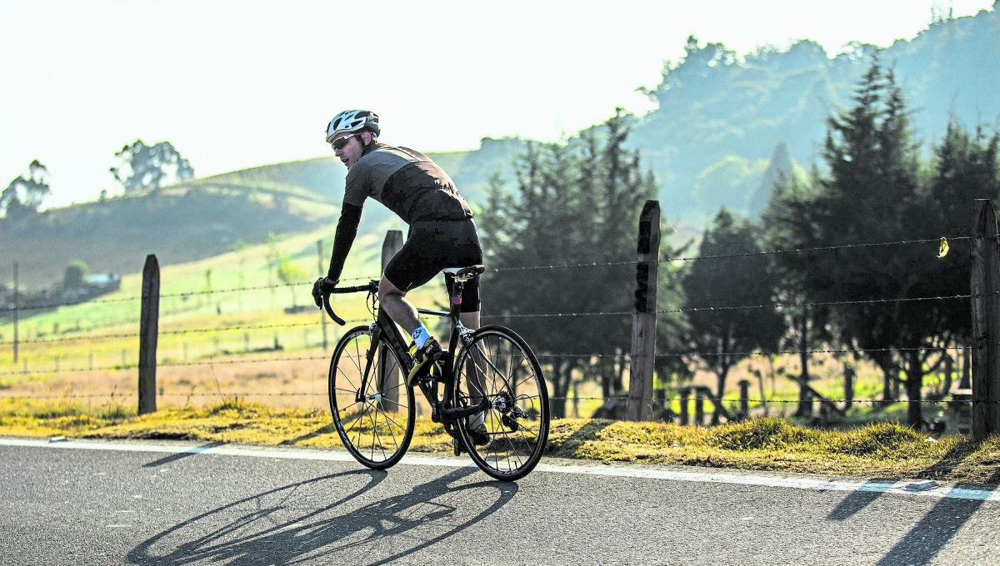

En este sistema podrás evidenciar las anomalías que se pueden presentar en las actividades físicas, es decir, registros que tengan patrones sospechosos y no estén dentro del promedio normal para un atleta profesional. Estos datos se sacaron de una base de datos con 30.000 registros de deportistas.

La práctica del ciclismo no solo fortalece los músculos y mejora la resistencia cardiovascular, sino que también fomenta la camaradería y el trabajo en equipo cuando se comparte la experiencia con otros ciclistas.

Al correr al aire libre, se tiene la oportunidad de explorar diferentes entornos, disfrutar de la naturaleza y experimentar beneficios adicionales para la salud mental, como la reducción del estrés y la mejora del estado de ánimo.